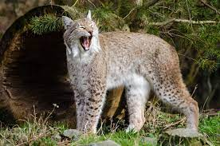
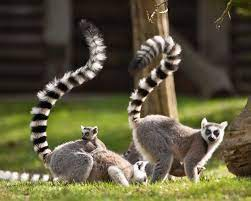

Állatkertünk felújítása befejeződött!
Állatkerti állományunk bővült!
Peti a viziló nem rég került be vadonatuj állatkertünkbe továbbá csalkazott hozzá Mango a maki majom és foltos a hiúz.

Hasznos infok a vizilóvakról:
- A nílusi víziló (Hippopotamus amphibius) az emlősök (Mammalia) osztályának párosujjú patások (Artiodactyla) rendjébe, ezen belül a vízilófélék (Hippopotamidae) családjába tartozó faj.
- Nevük ellenére nem a lovak a legközelebbi rokonai, de nem is a disznófélék, bár sokáig a legtöbben így vélték, egyebek közt a bikák röfögésre emlékeztető hangja miatt.
- A DNS-ek összehasonlításából meglepetésre kiderült, hogy legközelebbi rokonaik a cetek (Cetacea); emiatt manapság a vízilovakat és a ceteket a Whippomorpha nevű alrendbe foglalják össze.
- Még meglepőbb azonban, hogy Ernst Haeckel 1866-ban kiadott törzsfája a vízilovakat a cetek közeli rokonaiként ábrázolja. Máig sem tudni, Häeckel hogyan jutott erre a (helyes) következtetésre.

Hasznos infok a hiuzrol:
- A hiúz (Lynx) a ragadozók rendjébe tartozó macskafélék családjának egyik neme. A nembe négy faj tartozik. Az eurázsiai hiúz (Lynx lynx) Európa legnagyobb macskaféléje.
- A hiúzfajok elterjedési területe egykor az északi félteke szárazföldjeinek tekintélyes hányadát magába foglalta, manapság Ázsia bizonyos területein, Alaszkában, Kanadában és az USA nyugati területein, valamint Európában honos, de a legtöbb területen ritka, gyér az állománya
- Éjszakai ragadozó, különféle madarak, kisrágcsálók éppúgy szerepelnek étlapján, mint őzek, rókakölykök, szarvasborjak vagy vadmalacok.

Hasznos imfók a Maki majomról
- A gyűrűsfarkú maki vagy más néven katta (Lemur catta) az emlősök (Mammalia) osztályába, a főemlősök (Primates) rendjébe és a makifélék (Lemuridae) családjába tartozó faj.
- Madagaszkár déli, délnyugati és délkeleti területein él. Változatos élőhelyeken fordul elő, előnyben részesíti a galériaerdőket, a száraz, lombhullató erdőket és bozótosokat.
- Testhossza 38,5–45,5 cm, farka ennél hosszabb, 56–62,5 cm. Testtömege 2-3,5 kg.